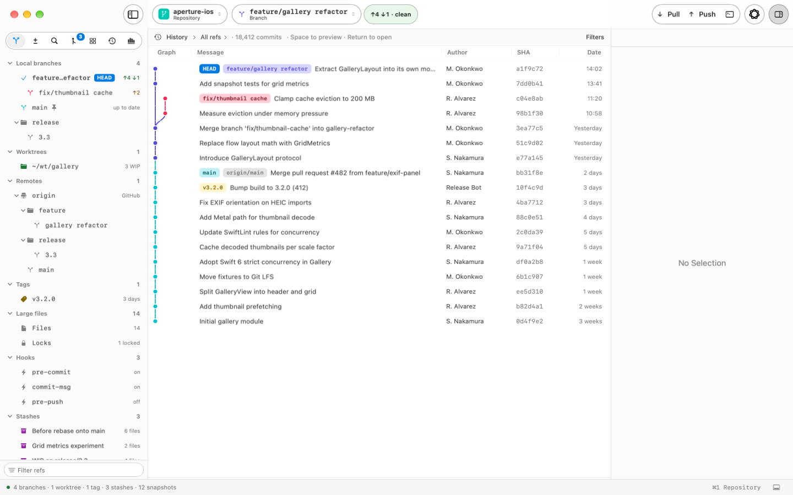

Build the right commit.
Inspect diffs, stage files, hunks, or individual lines, and compose your commit with the changes in view.
In development · Native Mac app
Follow your history. Shape your next commit. Git Client Preview brings your everyday Git work into a thoughtful Mac workspace.

Your work, in context
Keep the details close without losing the thread. Move between the work in front of you and the history behind it.
Inspect diffs, stage files, hunks, or individual lines, and compose your commit with the changes in view.
Explore the commit graph, follow branches and tags, and trace a file’s history to understand what changed.
Organize repositories and worktrees, switch branches, and work with remotes from the same native workspace.
On your Mac. On your terms.
Your repositories remain ordinary Git repositories. Keep using your terminal, editor, SSH keys, and the tools that fit your workflow.
Read about privacyA native interface with keyboard shortcuts, multiple windows, and your choice of external tools.
App-managed account tokens are stored in macOS Keychain. Hosting features connect to the services you configure.
No app analytics or automatic crash-report sending. Export a diagnostic report locally when you need help.
Git Client Preview is the working name while the app is in development. Features and availability may change. A public download is not available here yet.